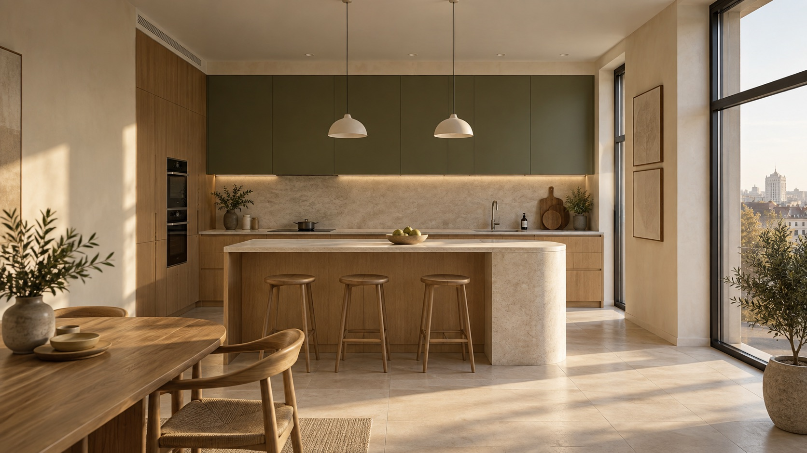

Подготовка и демонтаж
Снятие старых покрытий, подготовка основания, выравнивание стен и пола под будущую кухню.

РЕМОНТ И ОТДЕЛКА КУХОНЬ · МИНСК
Превращаем кухню в любимое место дома.
От ровных стен до света над обеденным столом.
Утренний кофе. Семейный ужин. Разговоры, которые затягиваются за полночь. Хорошая кухня создаётся для жизни — и начинается задолго до выбора цвета стен.
Продумываем поверхности, розетки, свет и подготовку под мебель как одно целое. Чтобы красиво было не только на фотографии, но и каждый день.
Можно обновить отделку.
А можно начать с чистого листа.
Снятие старых покрытий, подготовка основания, выравнивание стен и пола под будущую кухню.
Точки подключения техники, вода и освещение — по плану мебели и вашему сценарию жизни.
Фартук, покраска, напольное покрытие и аккуратные примыкания. Материалы, с которыми удобно жить.
Состав работ определяем по помещению. Изготовление мебели и поставку техники обсуждаем отдельно.
Тёплое дерево. Спокойный камень. Цвет, который не надоедает. Выберите настроение — и представьте свою кухню в нём.
Естественная фактура дерева и светлая отделка. Уютная база для неспешных завтраков.
У каждого этапа — своя задача.
У вас — понимание, что дальше.
Обсуждаем пожелания, размеры, состояние помещения и будущую мебель.
Уточняем материалы, состав работ, последовательность и смету.
Готовим поверхности и коммуникации, затем переходим к отделке.
Вместе смотрим результат: от геометрии фартука до чистоты примыканий.
Несколько деталей — и первый шаг уже сделан. Соберите задание, которое удобно обсудить с мастером.
Цена зависит от состояния помещения, площади и состава работ. Покраска стен и полная замена коммуникаций — разные задачи. Для предметной сметы нужны размеры, фотографии и список пожеланий.
Да, если существующая мебель и коммуникации позволяют. Можно обсудить замену фартука, покрытия стен, освещения и пола. Возможность сохранить гарнитур оценивается перед началом работ.
С плана кухни и размещения техники. Он нужен, чтобы правильно расположить розетки, выводы воды, вытяжку и рабочее освещение до чистовой отделки.
Срок зависит от демонтажа, объёма подготовки и времени высыхания материалов. Реалистичный график составляется после осмотра помещения и выбора отделки.
На странице показана AI-визуализация интерьерной концепции. Она помогает передать настроение и сочетание материалов и не является фотографией выполненного объекта.
МИНСК · РЕМОНТ И ОТДЕЛКА КУХОНЬ